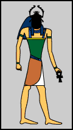

 Khepri
Khepri
'He Who is Coming into Being'
Appearance:
- Man with the head of a scarab
- A scarab beetle
Khepri was a god of creation, the movement of the sun, and rebirth.
The scarab beetle lays its eggs in a ball of dung. Then, it rolls the ball along the ground until the young beetles are ready to hatch.
When the young beetles are ready, they crawl out of the ball.

Khepri scarab
The ancient Egyptians believed that the beetles just appeared from nowhere- as they believed that their creator god had appeared from nowhere. Thus, they thought that the scarab beetle was special.
In certain creation stories, Khepri is connected with the god Atum.
He is also connected with the sun god Ra who pushed the sun through the sky every day.
 |